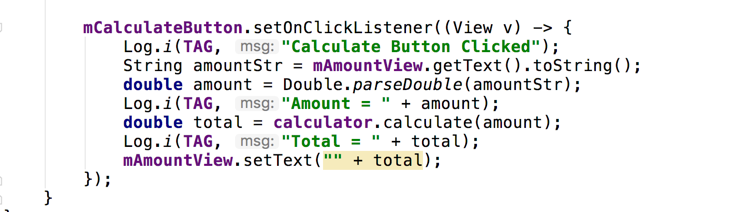

COMP 1601 Winter 2020
Tut12 -Explicit Intents
© L.D. Nel 2020
Revisions:
Description
In this tutorial we will explore Android's notion of Explicit Intents and provide a second activity to interact with the main activity.
You need to demonstrate your exercise to the TA or Prof. before you leave the class to get credit for it. If you complete, or make significant progress on the exercise you will get a mark of 2. If you make some progress you will get a mark of 1 and can "upgrade" that mark to a 2 by showing your completed work within one week of this exercise. 0 marks for a no-show or unsufficient progress.
Demo Code
Open the project in the demo_code folder, clean it, rebuild it, and the veryify that it runs. (This demo code is essentially the answer code from the last tutorial so feel free to use your own answer code if you prefer.)
What we really want in this application is for the calculation of tip and tax to happen on a different screen (in a different activity). In this tutorial we will look at the following:
Many android applications work like this and you want to be able to adopt the approach in your own designs.
Problem 1: Tip N Tax Calculator Activity
Imagine we want an activity that in which we can do the tip and tax calculation and in which we can make some alterations to the tip rate. Suppose want the following components on the new activity screen:
Start by defining string constants the you think you might need as for example below. Note the use of comments in the XML. This will become more and more important as you code grows.
Problem 2: Building a new Activity
Building a new activity involves three files: the java source file for the activity, an XML layout file, and a modification to the application manifest file. These can be manipulated manually but if done incorrectly Android Studio can get "upset". It is easier to start the process with Android Studio's New Activity Wizard.
Launch the New Activity Wizard by right clicking on you java source package and choosing New->Activity->Empty Activity:
Name the new activity TipCalcActivity. Make sure other fields are set as in the image below:
You should now have a second activity:
Next layout the user interface for the new activity and assign the correct string resource constants:
Problem 3: The Application Manifest File
For this problem we just want you to make some observations about modifications made to the application's manifest. Open the application's AndroidManifest.xml file. Notice that when the new activity was created using the wizzard that Android Studio has added the activity the manifest:
Every activity in an application needs to be represented in the manifest file so the android OS can access it. Here are a couple of observerations:
Problem 4: Starting the TipCalcActivity
Android Activity and its subclasses provide a static method startActivity(Intent) whereby an activity can start another activity. The request is forwarded to the android ActivityManager who then creates and launches the activity and calls it's onCreate() method. Thus from our code's perspective we will call startActivity(Intent) as a result of the user pressing the Calculate button on the main activity and then the next time our code becomes involved is when our TipCalcActivity's onCreate() methods runs.
Obvserve our calculate button handler in the main activity currently looks something like this:

In particular, it calculates the tip and tax total and displays it for the user. We want it to lauch the new TipCalcActivity instead. Modify the code the following instead:
Intents in android represent an intended type of activity desired and type of data to be passed to the activity. They are instances of the Intent class. Explicit intents identify the intended activity by it's class as we have done here, Implicit intents identify activities by the kind of operation desired (repesented by one of the constants defined in the Intent class e.g. Intent.ACTION_VIEW) and we will study those later in future tutorials.
Here we are creating an intent with a Context and a Class object. The context represents the current activity and the class object represents the kind of activity that you want to start. Again this is an Explicit Intent because we are identifying the exact activity by its class (TipCalcActivity).
Run the application and verify that when the Calculate Tip&Tax button is presses on the main activity the new TipCalcActivity starts and when the back button is pressed we return to the Main Activity:
OPTONAL: You should override all the android activity lifecycle methods in both the MainActivity and the TipCalcActivity and the observe what states the two activities go through in the above scenario.
Problem 5: Making the TipCalcActivity Functional
Next write the code in the TipCalcActivity so that it makes use of the TipNTaxCalculator helper class already there and lets the user enter a price and tip percentage and have it calculate the correct total. The initial tip percentage should be the value the TipNTaxCalculator was initialized with but the user should be able to change it. The tax rate will remain fixed. You should add whatever get() and set() methods to TipNTaxCalculator that you need.
When you've completed this you should be able to go to the TipCalcActivity screen and use it to compute a total. For now the use has to enter the price in that activity screen. Test to make sure it works:
Demonstrate the the user can change the tip percentage amount:
BONUS: Can you write the code so that the total is shown to only two decimal places.
Problem 6: Passing Data To The TipCalcActivity
We want the user to be able to enter the amount in the main activity screen and then when they press Calculate Tip&Tax that that amount be passed over to the new activity to be used in the calculation.
In the same way that Bundle is used to set and restore activity state, extra data can be attached to the Intent object that is used to start the new activity. In the documentation for the android Intent class locate the putExtra(String, double) method:
This method can get be used to add an arbitrary double to the Intent object that will be used to launch the new activity. Also locate its sister method:
which can be used to read the extra data back.
Add a convenient static string to the main activity class to be used as the key for the extra data:
public static final String TIP_N_TAX_MAIN_AMOUNT = "tip_n_tax_main_activity_amount";
Add the extra data to you intent before the second activity is started:
In the TipCalcActivity onCreate() method we can now read the extra data from the intent that was passed when then new activity was created:
getIntent() is an method all Activity objects understand and it will return the Intent object that was passed to startActivity(Intent).
Re-run the app and verify that the amount entered on the main activity is passed over to the TipCalcActivity to be used in the calculation:
Problem 7: Passing Result Back to Main Activity
Finally we want to pass the calculated total back to the main activity to be displayed for the user. If you want an activity to return a result you start it with:
public void startActivtyForResult(Intent intent, int requestCode)
rather than
public void startActivity(Intent intent)
as we have done so far.
The requestCode parameter will provide a way for the main activity to identify what result is being returned (more than one activity might have been started).
Create a convenient requestCode constant in MainActivity:
private static final int TIP_N_TAX_TOTAL_RESULT = 0;
Modify the code that starts the activity to pass this result code:
Intent intent = new Intent(MainActivity.this, TipCalcActivity.class);
intent.putExtra(TIP_N_TAX_MAIN_AMOUNT, amount);startActivity(intent);
startActivityForResult(intent, TIP_N_TAX_TOTAL_RESULT);
There are two method that can be called in the child activity (TipCalcActivity):
public final void setResult(int resultCode)
public final void setResult(in resultCode, Intent data)
In this case the resultCode is typically set to either Activity.RESULT_OK or Activity.RESULT_CANCELLED. These are used to let the parent activity know whether a meaningful result is being returned or whether the operation was cancelled in the child activity. Activity.RESULT_CANCELLED is the default returned if, say, the user presses the back button while in the child activity.)
The result is sent back by creating an Intent object and adding the data to be returned as EXTRA data. The return result is then set using the Activity's setResult(resultCode, data) method. Add code like the following to the Calculate button handler in the TipCalcActivity class:
Finally, when the user presses the back button in the child activity (TipCalcActivity) android's ActivityManager will invoke the following method in our parent activity (MainActivity):
protected void onActivityResult(int requestCode, int resultCode, Intent data)
Again the requestCode allows us to identify which result is coming back. The resultCode indicates whether meaningful data is expected or whether the activity was cancelled and finally the data would contain the return result.
Our final step is to override the onActivityResult(int, int, Intent) method in MainActivity to obtain the result. Here is an example of what that might look like:
Re-run the app and verify that the amount is correctly passed from the MainActivity to the TipCalcActivity and the calculated total is passed back when the user presses the back button after performing the calculation:
When you have completed these problems demonstrate your code to the TA or Prof. to get credit for the tutorial.Â
OPTIONAL
The following things have not been addressed in the code but should be: